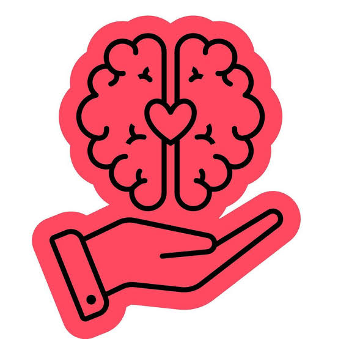

Apoio Psicológico
Grupos de apoio - Narcóticos Anônimos (NA): Reuniões gratuitas de mútua ajuda para pessoas que querem parar de usar drogas. - Amor-Exigente: Para orientação familiar apoia e orienta familiares que lidam com a dependência química em casa). - Alcoólicos Anônimos (AA) : Focado no apoio para problemas com o álcool, que muitas vezes está associado.